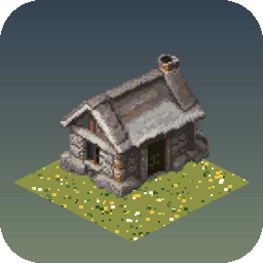

Autonomus Society
A medieval society that runs itself. You watch it grow from a small camp into a kingdom, and step in as its ruler only when you choose to.
The game
Autonomus Society is a simulation game set in medieval England. Villagers gather, build, farm and trade on their own; a council decides what to build next and explains why. The weather, seasons and terrain are simulated, and events grow out of them rather than from random rolls. The art is isometric pixel art drawn at human scale.
Our Pinterest app
Autonomus Society Reference Board is a private, read-only tool used only by the game's developer and art team.
- It reads the boards of the developer's own Pinterest account (
boards:read,pins:read). - It shows those saved pins as a visual style reference panel inside our private art editor, next to the pixel art we are making.
- It never creates, edits or deletes pins or boards, and never reads other users' data.
- Pin images are never used to train or evaluate AI models and never become part of the game.
- No data is sold or shared. The access token is stored encrypted and can be revoked at any time.
Full details: Privacy Policy.
En español
Autonomus Society es un juego independiente de simulación de una sociedad medieval que se gobierna sola; el jugador es el rey y solo interviene si quiere. Nuestra app de Pinterest es una herramienta privada y de solo lectura: muestra los tableros del propio desarrollador como referencia visual mientras se dibuja el arte del juego. No publica, no lee datos de otras personas, no comparte nada y no usa imágenes de Pinterest para entrenar modelos de IA. Detalle en la Política de privacidad.